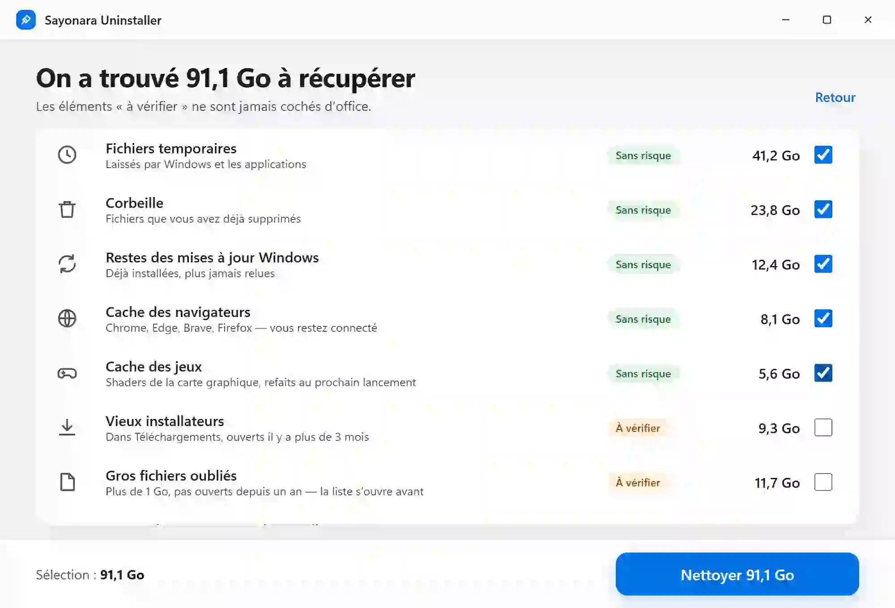
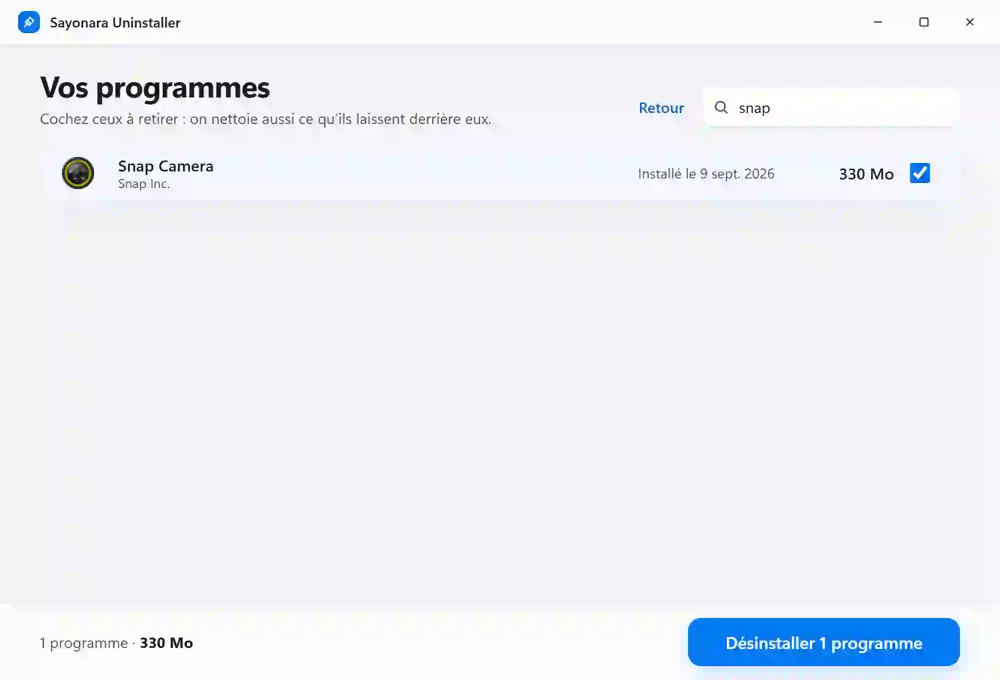
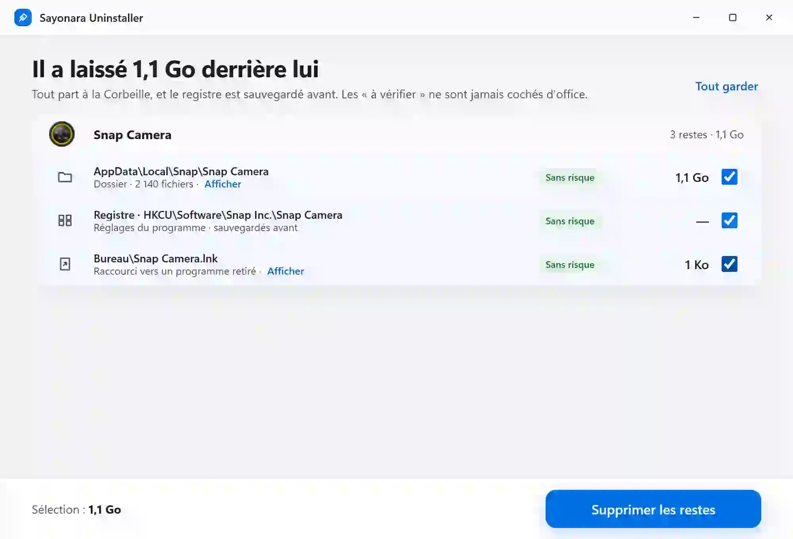

Le désinstalleur qui nettoie derrière lui
Sayonara Uninstaller
Gratuit · Windows 10 et 11 · Code source visible

91 Go
à récupérer, en quelques secondes
Un clic sur « Analyser » : elle mesure ce qui encombre C: et vous montre tout, catégorie par catégorie. Ce qui est sans risque est coché ; le reste vous attend.

Désinstalle.
avec son propre désinstalleur
Vos programmes, avec leur icône, leur éditeur et leur taille. Un à la fois, avec SON désinstalleur : elle attend qu’il ait vraiment fini.

Et ses restes.
dossiers, registre, raccourcis
Ce que le programme a laissé derrière lui : ses dossiers dans AppData et ProgramData, ses clés de registre, ses raccourcis morts. Tout part à la Corbeille, et le registre est sauvegardé avant.
Ce qu’elle nettoie
Ce qui est sans risque est coché. Ce qui est « à vérifier » ne l’est jamais d’office.
- Fichiers temporairesLaissés par Windows et les applicationsSans risque
- CorbeilleLes fichiers que vous avez déjà supprimésSans risque
- Restes des mises à jour WindowsDéjà installées, plus jamais reluesSans risque
- Cache des navigateursChrome, Edge, Brave, Opera, Firefox — vous restez connectéSans risque
- Cache des jeuxShaders de la carte graphique, refaits au prochain lancementSans risque
- Vieux installateursDans Téléchargements, ouverts il y a plus de 3 moisÀ vérifier
- Gros fichiers oubliésPlus de 1 Go, pas ouverts depuis un an — la liste s’ouvre avantÀ vérifier
- Restes de programmesDossiers oubliés dans Program Files — la liste s’ouvre avantÀ vérifier
- Dossiers de développementtarget, node_modules — refaits à la prochaine compilation, vous choisissez lesquelsÀ vérifier
Rien d’important n’y passe
Vos photos, vos documents et vos jeux ne sont jamais touchés. Et ce qui part peut revenir.
- Tout part à la CorbeilleLes dossiers, les raccourcis et tout ce qui est « à vérifier » : récupérables tant que vous ne la videz pas.
- Le registre sauvegardé avantChaque clé est exportée en .reg dans vos Documents avant d’être supprimée : un double-clic la remet.
- Rien de moins de 24 heuresUn fichier créé ou modifié aujourd’hui reste où il est.
- Jamais derrière un lienUn dossier atteint par un lien ou une jonction n’est ni suivi ni vidé.
- Une seule demande d’administrateurSeulement s’il y a quelque chose à faire dans Windows ou Program Files, et le plan est vérifié avant.
- Jamais un programme encore làUn dossier qui porte le nom d’un programme installé, ou de son éditeur, n’est jamais proposé.
Elle se tient à jour toute seule
Une pastille dans sa barre de titre : un clic, elle s’installe et se relance. Chaque mise à jour est signée.
36 secondes pour la voir faire
Sayonara Uninstaller
Gratuit · Windows 10 et 11 · Code source visible
github.com/drrakendu78/Sayonara-Uninstaller
L’installeur n’a pas encore de signature de code Windows : au premier lancement, Windows peut afficher « Windows a protégé votre ordinateur ». Cliquez sur « Informations complémentaires », puis sur « Exécuter quand même ».